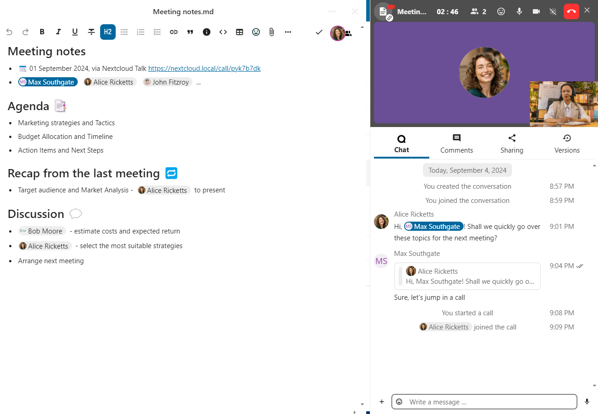
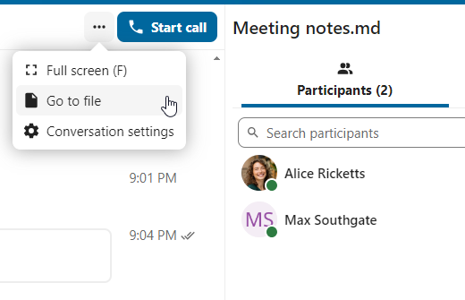
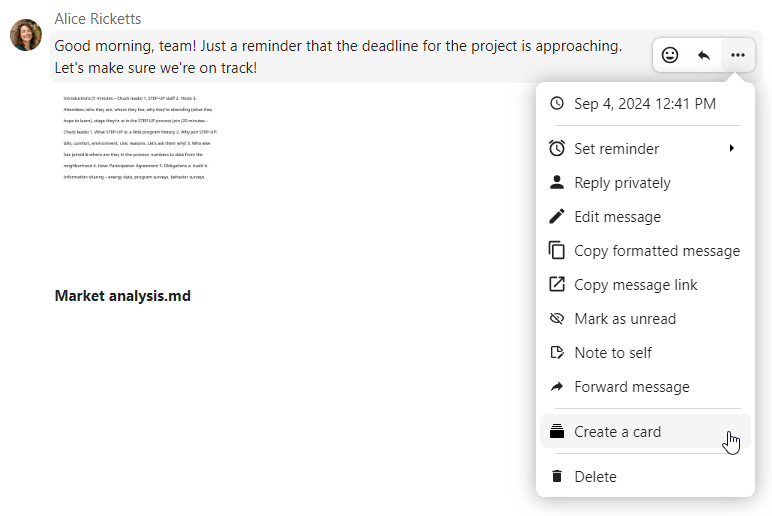
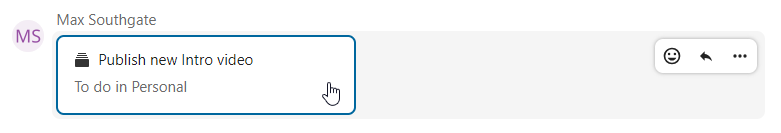
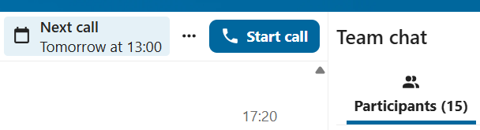
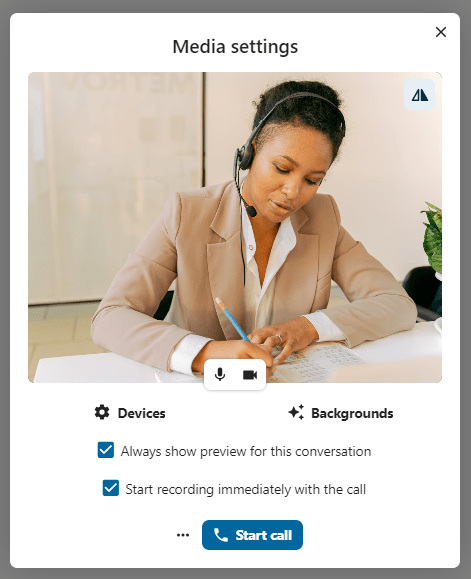
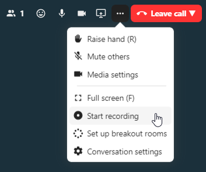
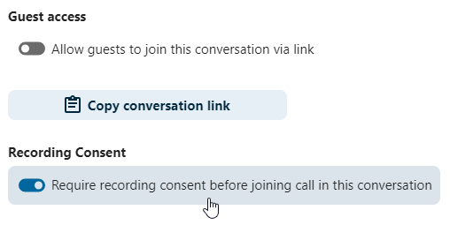
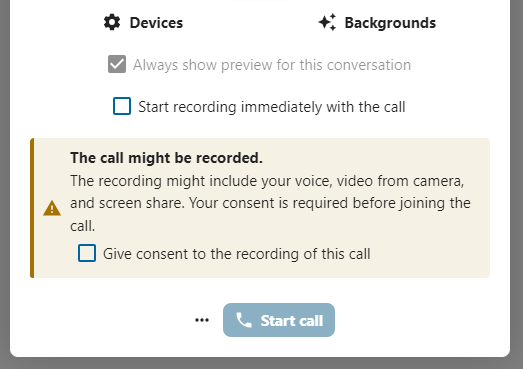

Pokročilé funkce Talk
Nextcloud Talk disponuje mnoha pokročilými funkcemi, které se uživatelům mohou hodit.
Matterbridge
Napojení na Matterbridge v Nextcloud Talk umožňuje vytvářet „mosty“ mezi konverzacemi v Talk a na ostatních chatovacích službách, jako je MS Teams, Discord, Matrix a dalších. Seznam podporovaných protokolů naleznete na GitHub stránce Matterbridge.
Moderátor může přidat Matterbridge napojení v nastavení daného chatu.

Každý z mostů má své vlastní potřeby ohledně nastavení. Informace pro většinu z nich jsou k dispozici na wiki stránkách Matterbridge, na které se dostanete přes volbu další informace z nabídky … . Nebo jděte na wiki přímo
Čekárna
Funkce čekárny umožňuje zobrazovat hostům čekací obrazovku, dokud hovor nezačne. To je ideální například pro webináře s účastníky zvenčí.

Je možné zvolit, že účastníkům umožníte se připojit do hovoru v konkrétní čas, nebo když čekárnu zavřete ručně.
Příkazy
Nextcloud umožňuje uživatelům vykonávat akce pomocí příkazů. Příkaz typicky vypadá jako:
/wiki letadla
Správci mohou nastavovat, zapínat a vypínat příkazy. Uživatelé mohou pomocí příkazu help (nápověda) zjišťovat, jaké příkazy jsou k dispozici.
/help

Další informace naleznete v dokumentaci pro správce Talk.
Talk ze Souborů
V aplikaci Soubory je možné v postranním panelu chatovat o souborech a dokonce si volat v průběhu jejich upravování. Nejprve je ale třeba se připojit do chatu.


Chatovat nebo volat s ostatními účastníky můžete i poté, co soubor začnete upravovat.
{kind=link}

V Talk bude vytvořena konverzace pro soubor. Odtud je možné chatovat, nebo přejít zpět na soubor pomocí nabídky … vpravo nahoře.
{kind=link}

Vytváření úkolů z chatu nebo sdílení úkolů v chatu
Pokud je nainstalovaný Deck, je možné použít nabídku … zprávy v chatu a vytvořit ze zprávy úkol v Deck.
{kind=link}


Z Deck je možné sdílet úkoly do konverzace v chatu.

{kind=link}

Meetings and events
If calendar events have a Talk conversation set as event location, you will see an information about upcoming events inside of this conversation. That way you can stay informed about scheduled meetings or activities directly within your chat. If Calendar app is enabled, you can click on an event to view details.
{kind=link}

Přestávkové místnosti
Přestávkové místnosti vám umožňují rozdělit hovor v Nextcloud Talk do menších skupin a docílit tak diskuzí lépe zaměřených na témata. Moderátor hovoru může vytvořit vícero přestávkových místností a do každé z nich přiřadit účastníky.
Poznámka
Breakout rooms are currently not available in conversations that are joinable by guests (public conversations).
Nastavování přestávkových místností
Abyste mohli vytvářet přestávkové místnosti, je třeba být ve skupinové konverzaci moderátorem. Klikněte pak na nabídku v horní liště a dále na „Nastavit přestávkové místnosti“.

Otevře se dialog, ve kterém je možné zadat počet místností, které chcete vytvořit a způsob přiřazování účastníků. Obdržíte tři možnosti:
Automaticky přiiřadit účastníky: Talk automaticky přiřadí účastníky do místností.
Ručně přiřadit účastníky: Projdete editorem účastníků, ve kterém přiřadíte účastníky do místností.
Umožnit účastníkům zvolit si: Účastníci se budou moci přidávat do přestávkových místností sami.

Správa přestávkových místností
Jakmile jsou přestávkové místnosti vytvořené, uvidíte je v postranním panelu.

Ze záhlaví postranního panelu
Otevřít a zavřít přestávkové místnosti: toto přesune veškeré uživatele v nadřazené konverzaci do jejich přestávkových místností.
Odeslat zprávy do všech místností: toto odešle zprávu do všech místností naráz.
Změnit přiřazení účastníků: toto otevře editor účastníků, ve kterém je možné změnit kteří účastníci jsou přiřazení do kterých přestávkových místností. Z tohoto dialogu je také možné mazat přestávkové místnosti.

Z prvku přestávkové místnosti (v postranním pruhu) je možné se také přidat do konkrétní přestávkové místnosti nebo do ní poslat zprávu.

Call recording
The recording feature provides users with an opportunity to:
Start and stop recordings during a call.
Record the video and audio stream of the speaker, as well as screen share.
Access, share and download recorded files for future reference or distribution.
Enabling this feature requires the recording server to be set up by the system administration.
Manage a recording
The moderator of the conversation can start a recording together with a call start or anytime during a call:
Before the call: tick the checkbox „Start recording immediately with the call“ in „Media settings“, then click on „Start call“.
During the call: click on the top-bar menu, then click „Start recording“.
{kind=link}

{kind=link}

The recording will start shortly, and you will see a red indicator next to the call time. You can stop the recording at any time while the call is still ongoing by clicking on that indicator and selecting „Stop recording“, or by using the same action in the top-bar menu. If you do not manually stop the recording, it will end automatically when the call ends.

After stopping a recording, the server will take some time to prepare and save the recorded file. The moderator, who started the recording, receives a notification when the file is uploaded. From there, it can be shared in the chat.


Recording consent
For compliance reasons with various privacy rights, it is possible to ask participants for consent to be recorded before joining the call. The system administration has the flexibility to utilize this feature in several ways:
Disable consent completely.
Enable mandatory consent system-wide, requiring consent for all conversations.
Allow moderators to configure this option on a conversation level. In such cases, moderators can access the conversation settings to configure this option accordingly:
{kind=link}

If recording consent is enabled, every participant, including moderators, will see a highlighted section in the „Media settings“ before joining a call. This section informs participants that the call may be recorded. To give explicit consent for recording, participants must check the box. If they do not give consent, they will not be allowed to join the call.
{kind=link}


Federated conversation
With Federation feature, users can create conversations across different federated Talk instances and use Talk features as if they were on a same server.
Feature is required to be set up by the system administration.
Send and accept invites
The moderator of the conversation can send an invite to participant on a different server:

When receiving a notification, user will see a counter of pending invites above the conversations list.

Upon clicking it, more information will be provided about inviting party, and user can either accept or decline the invitation.

By accepting the invite, conversation will appear in the list as any other one.

You can use it further to chat with participants from other federated servers, join calls and use other available Talk features.
Chat summary
When AI assistant is enabled, a summary can be generated if there are more than 100 unread messages. You can generate it by pressing the button that is visible in chat above the first unread messages.
You can use it further to chat with participants from other federated servers, join calls and use other available Talk features.